Retour en classe

Vous incarnez le personnage de Sachez, jeune homme de 25 ans, habitant du paisible village de Bois-de-France, qui commence à s'intéresser aux sujets politiques, et curieux d'en apprendre plus.
▼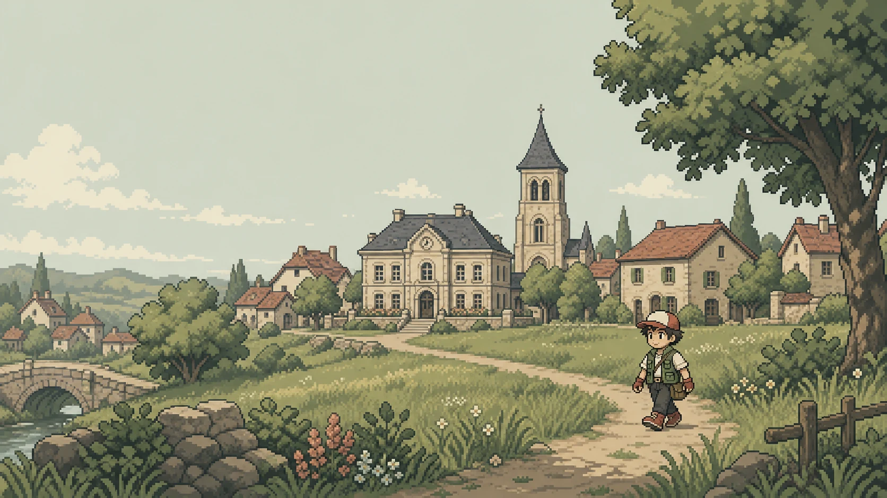
À l'été 2027, dans le paisible village de Bois-de-France, Sachez réalise sa promenade quotidienne…
▼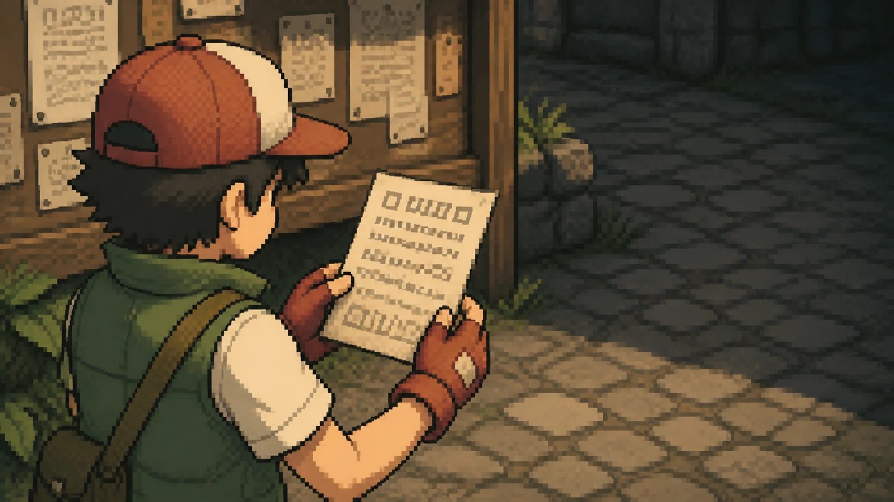
…lorsqu'il tombe par hasard sur un étrange document d'un ancien professeur :
« Polimon 2027 — Éduquez-vous tous !
Les élections présidentielles de 2027 approchent à grands pas, et avec elles les idées politiques se répandent à travers le pays.
Adoptez les Polimons qui vous ressemblent et amenez-les au plus haut de l'Élysée ! »
— Professeur Chen
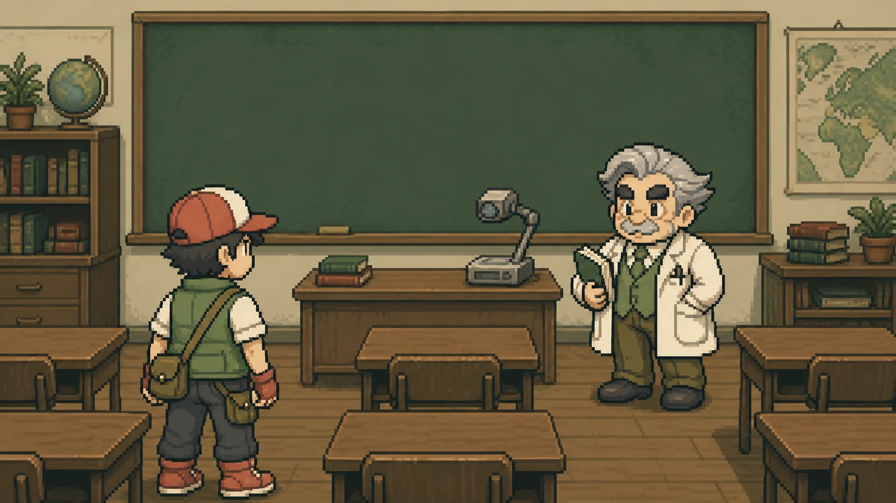
Professeur Chen, comment allez-vous ? Je suis tombé sur votre prospectus concernant les Polimons… Pouvez-vous m'en dire plus ?
▼Sachez ! J'imagine que tu reconnais ton ancienne salle de classe. C'est une excellente question. Laisse-moi t'expliquer…
▼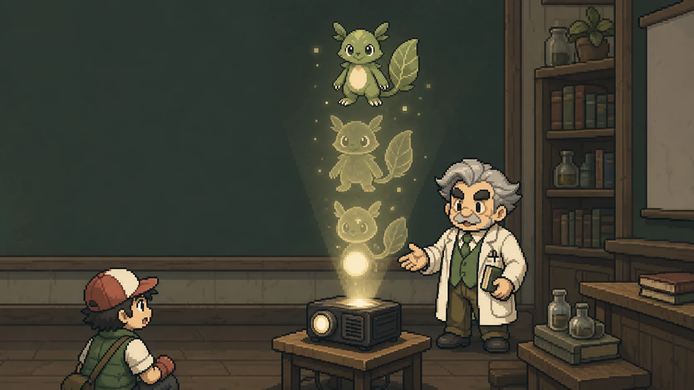
Quand une personne croit fermement en une idée politique, alors celle-ci prend forme et se matérialise comme Polimon. Les Polimons sont des idées qui ont pris vie, ils en possèdent donc les caractéristiques : ils s'adoptent, ils s'affrontent, et bien sûr… ils évoluent.
▼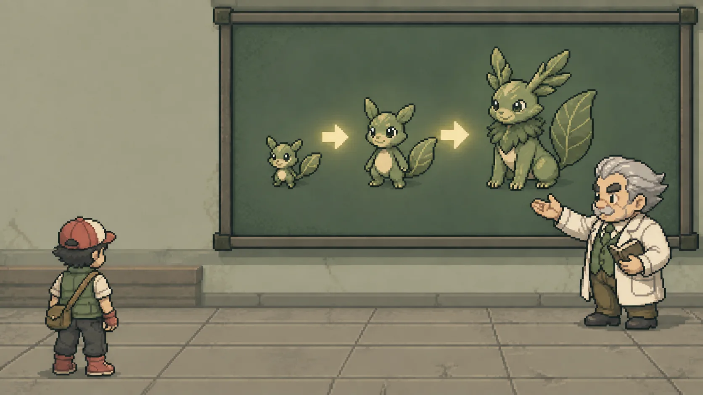
Lorsque son dresseur maîtrise parfaitement les idées politiques qu'il représente, le Polimon évolue pour devenir plus grand et fort. Chaque Polimon connaît 3 niveaux d'évolution « 3P », selon la tangibilité de ses idées : Philosophie, Perspective et Programme.
▼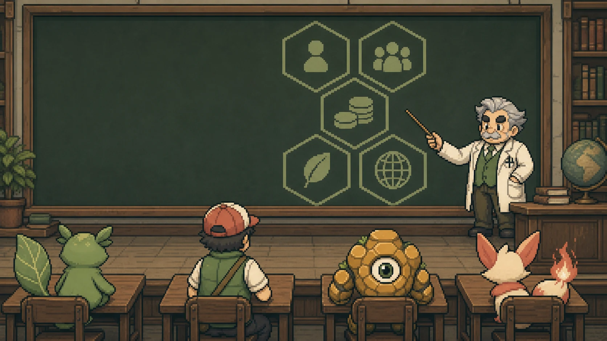
Par ailleurs, les idées portées par les Polimons s'expriment toujours dans les mêmes 5 dimensions : l'individu, la société, l'économie, l'écologie et la géopolitique.
▼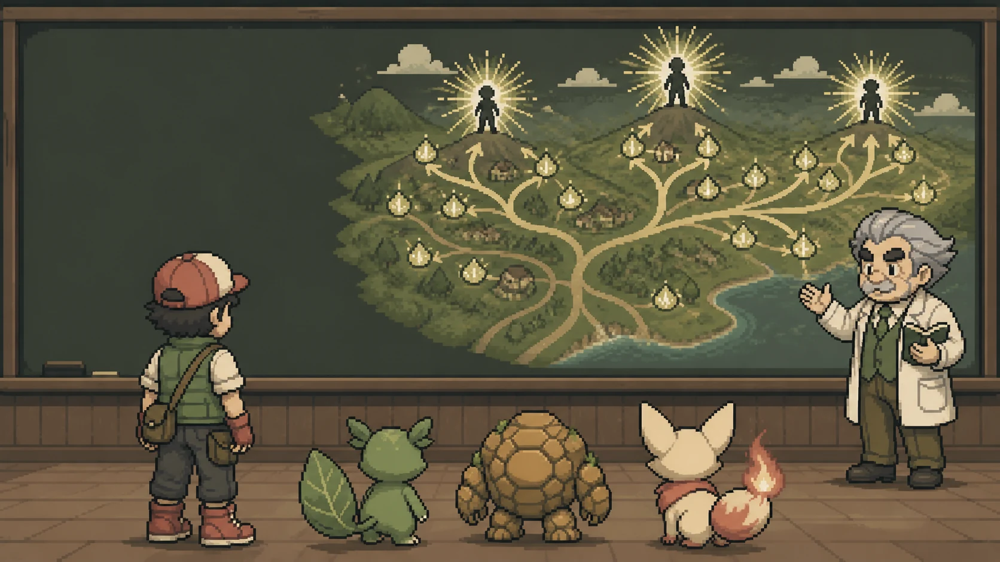
En cette période d'élection, de grands dresseurs répandent leurs idées, ou Polimons, par milliers à travers le pays. Cependant, peu de gens cherchent vraiment à les domestiquer, et ne peuvent donc pas voter de manière éclairée…
▼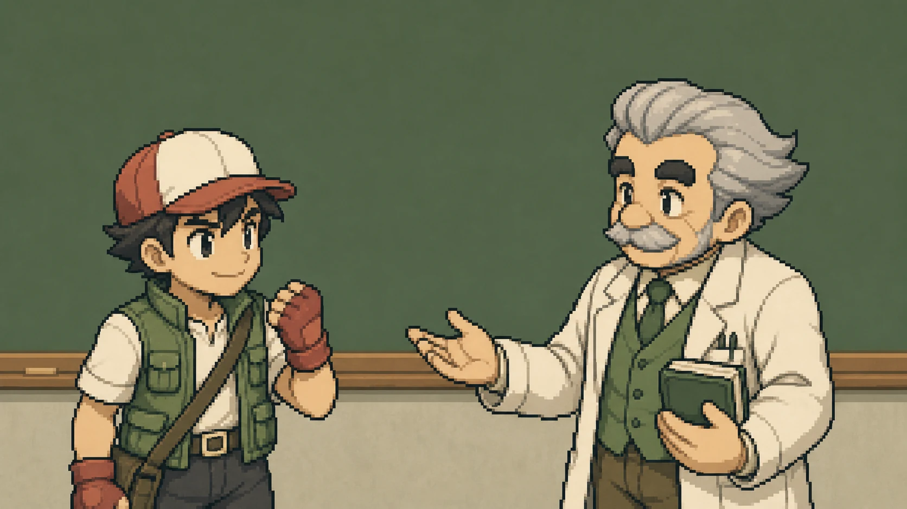
Je veux aussi devenir un grand dresseur Polimon, et faire grandir mes propres idées politiques !
▼Haha ! Excellent Sachez, je reconnais là bien ton enthousiasme. Alors adopte les idées qui te ressemblent, maîtrise ces idées pour les faire évoluer, et amène-les au sommet de l'Élysée !
▼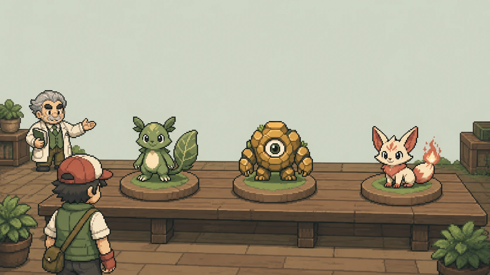
Mais avant tout, commençons par le commencement : choisis un Polimon de niveau 1 — Philosophie — qui te correspond. Un Polimon Philosophie se choisit avec le cœur, avant de se choisir avec la tête !
▼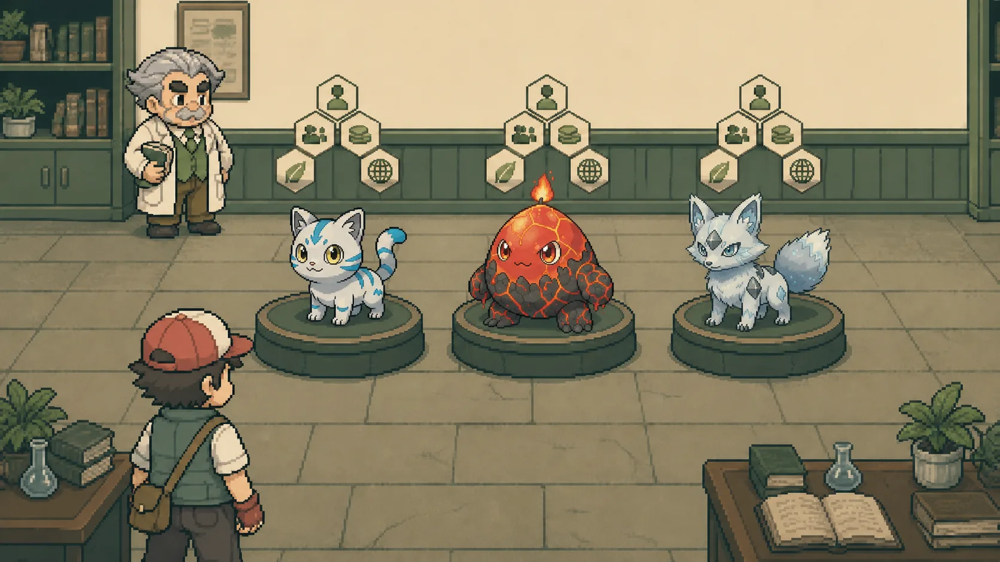
Sachez observe longuement les trois compagnons… Toi aussi : survole les 5 dimensions au-dessus de chaque Polimon pour découvrir sa philosophie, puis clique sur celui qui te ressemble. Choisis avec le cœur — le choix est définitif !
▼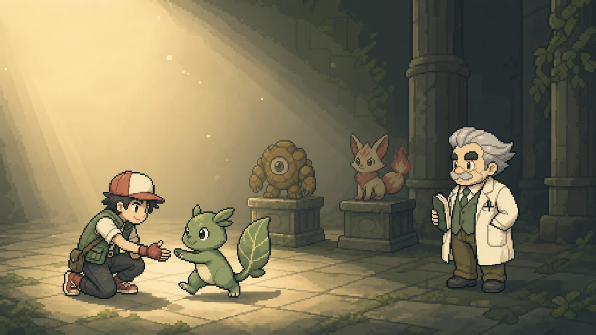
Excellent choix, Sachez ! Désormais, parcours le monde pour confronter ton Polimon à d'autres idées afin de le faire grandir. Rappelle-toi : le combat des hommes est vil, seul le combat des idées compte !
▼L'aventure continue…
Tu connais désormais les Polimons. Découvre les 39 idées recensées par le Professeur Chen :
📕 OUVRIR LE POLIDEX ▸Le Dîner de famille
Pour vivre cet épisode, choisis d'abord ton compagnon dans l'épisode 1 — c'est lui qui accompagne Sachez au dîner…
▼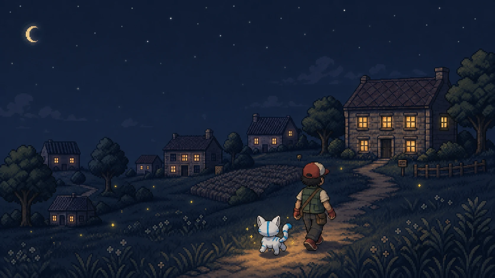
Quelques jours plus tard, à la nuit tombée… Mamie Rose reçoit toute la famille pour son fameux dîner du dimanche. Sachez arrive avec VOLTATAL trottinant à ses côtés.
▼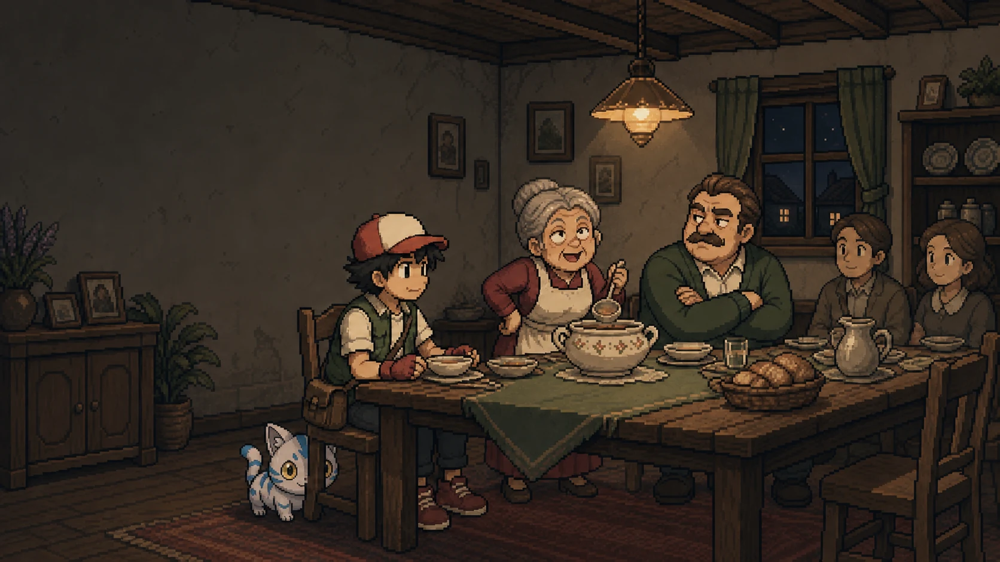
La soupe de Mamie, il n'y a rien de meilleur au monde ! Par contre… tonton Gérard est là. Et avec lui, la politique n'est jamais bien loin.
▼Alors comme ça, on « dresse des idées » maintenant ? De mon temps, on écoutait l'expérience au lieu de courir après la nouveauté. Enfin… chacun ses lubies.
▼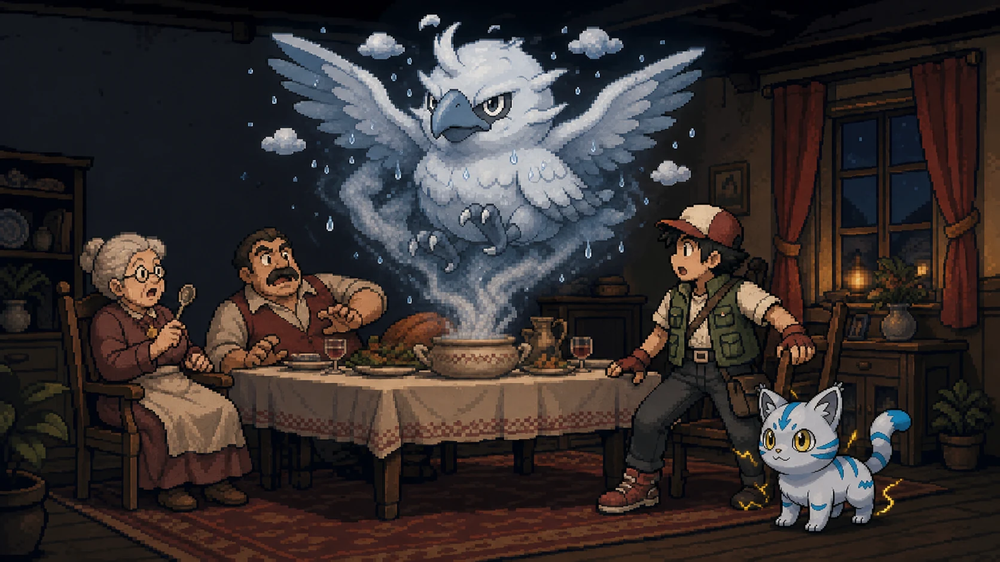
Soudain, la vapeur de la soupière s'épaissit, tourbillonne… et prend forme ! Un Polimon de brume déploie ses ailes au-dessus de la table : BRUMEDO. Sans le savoir, Gérard nourrissait cette idée depuis des années.
▼Nom d'une pipe… Il me ressemble, ce petit ! C'est donc ça, un Polimon ?
▼Eh oui, tonton : tout le monde porte des idées en lui. Voyons ce que la tienne a dans le ventre — le combat des idées peut commencer !
▼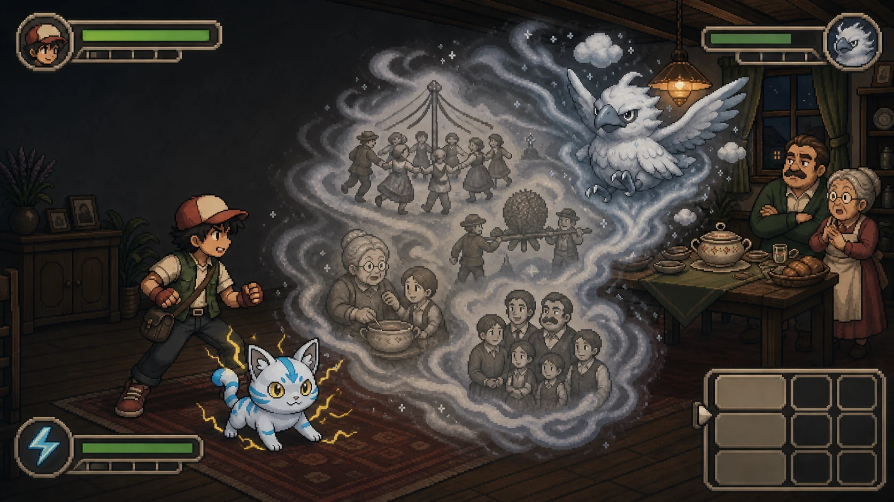
Premier échange : l'individu et la société. Les deux Polimons se jaugent, et les idées fusent au-dessus de la nappe.
▼👤
👥
👤
👥
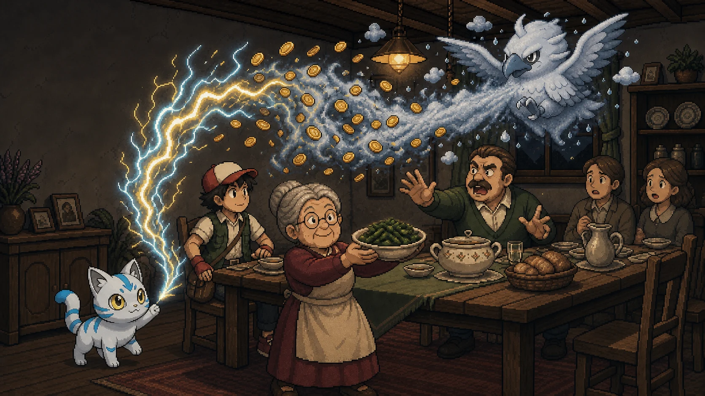
Deuxième service : l'économie et l'écologie. Mamie Rose ressert la soupe sans quitter les Polimons des yeux.
▼💶
🌱
💶
🌱
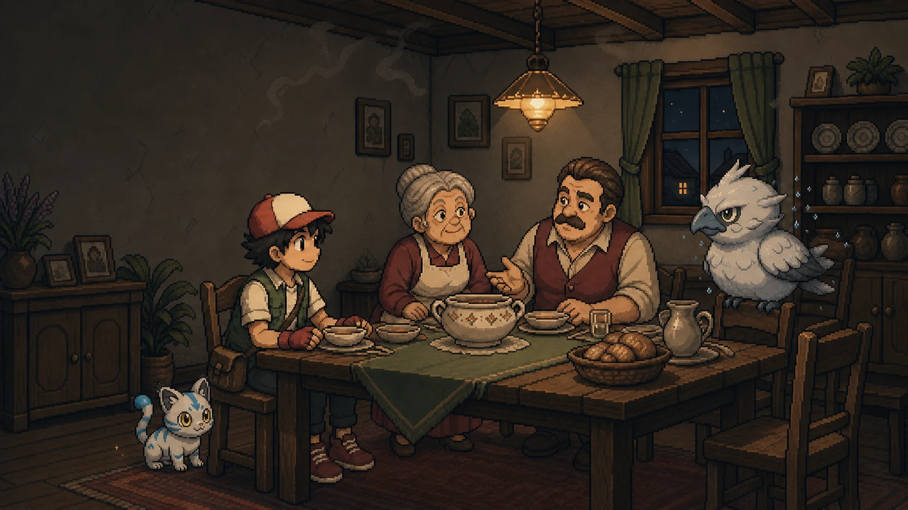
Les idées se sont affrontées — pas les personnes. La brume retombe doucement sur la soupière et, pour la première fois de la soirée… Gérard écoute.
▼Hm. On n'est toujours pas d'accord, gamin. Mais ton Polimon tient debout… et le mien aussi, pas vrai ?
▼C'est tout ce qui compte, tonton : le combat des hommes est vil, seul le combat des idées compte !
▼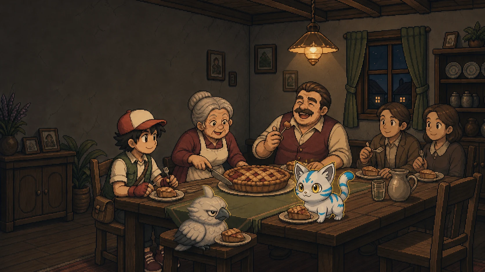
Autour de la tarte de Mamie Rose, on ressert une part — et une idée. Brumedo picore les miettes ; sur la chaise voisine, VOLTATAL scintille d'une lueur nouvelle… comme s'il avait grandi ce soir.
▼Reviens vite, mon grand ! Et ramène ton petit ami étincelant — lui au moins, il mange moins que ton oncle.
▼Une évolution se prépare…
Ton compagnon a des idées à défendre. Confronte-les à celles des autres Polimons :
⚔️ ESSAYER LE MODE COMBAT ▸Consécration
En attendant, rencontre les grands dresseurs qui répandent leurs idées à travers le pays :
🧢 RENCONTRER LES DRESSEURS ▸